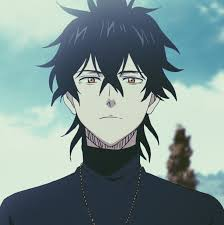
Yuno Grinberryall
Yuno Grinberryall is an orphan who was left under the care of a church in Hage after the downfall of House Grinberryall, the former royal family of the Spade Kingdom. He wields a four-leaf clover grimoire and is a Magic Knight of the Clover Kingdom's Golden Dawn and Royal Knights squads.
About the Legend
☛ Yuno was born to Loyce and Ciel of House Grinberryall, the royal family of the Spade Kingdom. As an infant, Yuno is given a magic stone found in a Grand Magic Zone.
☛ Later that year, the Zogratis siblings attacked the royal castle and killed many of the royals. Knowing that Yuno will be killed if he was found, some members of the Mage Defense Force escaped with the infant, and Ralph Niaflem's father carried Yuno across the Grand Magic Zone between the Spade Kingdom and the Clover Kingdom. Upon arriving at the village of Hage, the mage used the last of his magic to deliver Yuno to the front of the church before collapsing to his death.
☛ As an orphan, Yuno spent his childhood in the church and grew along with Asta and the other orphans. One day, during a trip home after grocery shopping with his foster family, Yuno overheard a few villagers talking about life in the Noble Realm of the Kingdom. After Sister Lily explained the social status within the Kingdom, Yuno hears Asta's dream to become the Wizard King for the first time.
☛ Years later, Yuno still lives at the church, where he takes care of chores such as doing laundry, chopping firewood, or taking care of the younger children. When he turns 15 years old, Yuno receives a four-leaf clover grimoire during the Grimoire Acceptance Ceremony. He declares his ambition to the public while brushing off Asta's declaration of rivalry. Later that day, Yuno is confronted by Revchi Salik, who manages to snatch his grimoire and immobilizes Yuno with his Chain Magic. Once again, Asta steps in to save him, which prompts Yuno to clarify his previous statement during the ceremony and declares Asta as his rival.
☛ Sylph
Sylph is one of the four main elemental spirits who chose Yuno during the battle at the dungeon. She likes Yuno and has a possessive attitude. However, Yuno acts detached from her chatty behavior and usually refuses to respond to her comments, pretending she does not exist whenever she gets frustrated with him. While in battle, Yuno chooses only to speak to Sylph through instructions or simple answers.
Battle Prowess
Magic
Wind Magic: Yuno uses this magic attribute to generate and manipulate wind. He is proficient with this magic even before he receives his grimoire. He usually uses this magic in the form of whirlwinds that can knock out his opponents in a single hit. He can also use the whirlwinds to lift and propel himself through the air.
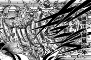
Tornado Fang
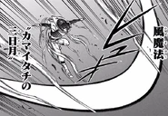
Crescent Wind Sickle
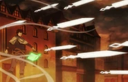
Wind Blades Shower
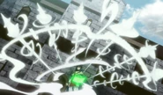
Gale White Bow
Creation Magic: Yuno uses this form of magic to shape objects and entities from wind.
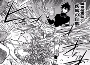
White HawkArk of Heavenly Wind
Spirit Magic: Yuno uses this form of magic to summon a spirit that can assist him in battle. He uses this magic to summon Sylph, the wind spirit. After reaching near 100% resonance with Sylph, they reach Saint Stage.
Reinforcement Magic: Yuno uses this form of magic to increase his physical abilities.
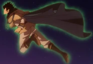
Mana Skin
Star Magic: Yuno uses this magic attribute to generate and manipulate stars. He can use them to fire beams of magical light, to create defensive barriers, and even to teleport himself between these stars.
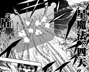
Quartile Scutum
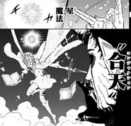
Star Conjunction
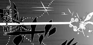
Quartile Hasta
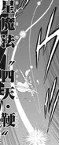
Quartile Flagellum
Union Magic: Yuno combines his Star Magic with Sylph's Wind Spirit Magic.
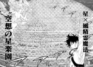
Never-Never Land
Abilities
Immense Magic Power: As the human vessel for an elf spirit and the rightful heir to the throne of the Spade Kingdom, Yuno possesses an immense amount of magic power. His large reserves allow him to cast two different spells at the same time with ease. He easily fights on par with two of the Diamond Kingdom's Eight Shining Generals and defeats one of them. His magic power increases greatly while under the effects of the elf reincarnation spell. He develops his skills and power and achieves the rank of Stage Zero. A year and three months after receiving his second grimoire, Yuno's power has developed even further, enabling him to take down a group of high-ranking devils in an instant by himself and to shield the entire Noble Realm against countless lasers.
Enhanced Mana Sensory: Yuno possesses the ability to sense mana from his surroundings. In addition, he can see the flow of mana in the form of a flock of winged beings.
Mana Zone: Yuno can control all the mana in the area around him to increase his spells' power and range. He often uses this ability to generate spells behind his opponents, catching them by surprise.
Spirit Absorption: By combining Mana Zone with his refinement of Mana Skin, Yuno merges with Sylph and a vast amount of mana, increasing his magic power and transforming himself. The increase in power allows him to match that of Rill Boismortier, a Magic Knight Captain but loses to Zenon Zogratis, a Dark Triad, using 55% of his devil's power. With further training and Sylph's help, the transformation is more complete, and Yuno is able to overpower Zenon at 80% but is pushed back at 100%.
Dual Mana Attribute Affinity: Due to being the host of the human-elf hybrid, Yuno possesses two mana affinities: Wind Magic and Star Magic.
Stats
Overall Stats
Power
Speed
Magic
Intelligence
Durability
5/5
5/5
5/5
4/5
4/5
Magic Stats
Wind Magic
Creation Magic
Spirit Magic
Reinforcement Magic
Star Magic
5/5
4/5
5/5
4/5
5/5
Equipment
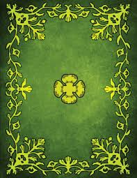
Four-leaf GrimoireGrimoire: Yuno possesses a four-leaf clover grimoire which signifies you as lucky because he was beloved by mana and it also contains various wind-based spells, which he receives in the acceptance ceremony after he turns 15 years old. His grimoire has a gold-colored cover, the gold-colored four-leaf clover insignia at the center of the front cover, and intricate ornaments around the borders.
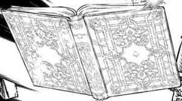
Star GrimoireSecond Grimoire: Yuno also possesses a spade grimoire that contains various star-based spells. He receives this grimoire after crashing into a grimoire tower in the Spade Kingdom.